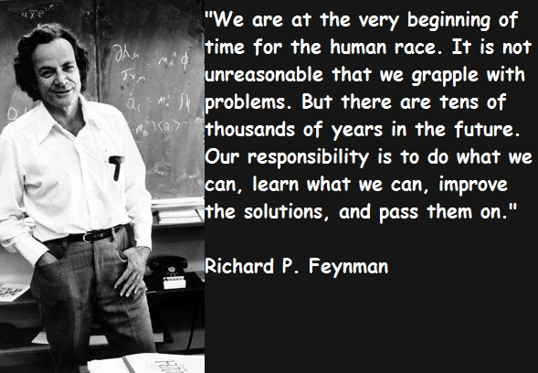

Feynman Lecture Notes by John T. Neer
These notes are for all those who want to learn more about science, math and nature as Feynman did; to learn more of how he taught and embrace his charge to pass on what we have learned.
I believe consistent with Feynman’s interest to teach as many as he could about science these notes are free and open to the public for non-commercial use.
Update: 8/2019
The Hughes Lecture Notes, THL, website has been up for about 5 1/2 years. The visitor count has now exceeded 200,000 from over 185 countries around the world. Those visitors have “visited” and or downloaded over 1,000,000 lecture volumes .
This continual, and sustained, interest in Feynman’s approach to physics and related science fields is sufficient historical validation of the original transcription effort I undertook for my own learning experience. It also validates the process involved in scanning my notes to make the lectures available on line to the general public at no cost. Feynman would be pleased with this continual show of interest in his approach to teaching and exploring complex science subject matters.
For those interested in learning more about the creation of these lecture you will find them on a podcast:
HRL Podcast: An oral interview on the development and motivation for THLs
In March 2017,during a visit and tour at the now HRL Laboratories, LLC, I was interviewed about my interest in Feynman and how the notes came about. The HRL Laboratories have undertaken a project to capture and preserve its long history of scientific and engineering breakthroughs. The interview was conducted as part of capturing a part of the labs oral history. For those interested in that interview which has recently been made available as a podcast it can be found at http://www.hrl.com/podcast/2017/12/18/episode-002-john-neer
These lectures notes run from the fall of 1966 to 1971. Feynman lectured prior to this period and continued on after 1971. With a few exceptions, the actual 2 hours lectures were not dated. However, the volumes in chronological order.
Feynman solicited topic input from the scientists and engineers at the Labs for the coming year. New discoveries were being made in astronomy, astrophysics, and cosmology at the time. This 1966-1967 lecture series focused on these subjects. This volume is unique since, as far as I can tell, Feynman did not lecture on this subject matter at CalTech. While much of the material is now dated, what remains is a look into the mind of Feynman as he worked to explain such topics as stellar evolution, nuclear synthesis, cosmology, “black stars” (aka black holes), and general relativity.
I inserted more current content from the web which relates to the 1966-67 lectures with recent experimental observations and discoveries. While this lecture series has been “eclipsed” by the tremendous theoretical and experimental advancements over the past 45 years, I am sure the reader(s) will find in these lectures the power of Feynman’s insight and ability to have fun with a new subject not touched on by him at CalTech in his “normal” class and research work. I trust others, more specialized in the topics of volume 1, can and will contribute to the additional information to further enrich the notes in the future. This editing will best be done when the notes are moved and dropped in a dynamic and editable platform, yet to be identified.
The Volume I subject matter was not part of his prior lecture activity, Feynman would talk with some of his CalTech colleagues who worked in the field of astronomy, astrophysics, and cosmology about their work and theories. He would then come to the lecture literally with a (maybe 2 or 3) 3×5 cards and proceed to pour out 2 hours of theory and complex mathematical representations of the topic of the day. This was his genius and almost mystical in his ability to focus his thinking and presentation ability on the most important aspects of a given topic.
First, these notes are dedicated to my wife who had to put up with the time requirements to both attend and transcribe these notes immediately after the lectures. This five-year Feynman engagement began within 3 months of our marriage and relocation from the midwest to southern California.
Second, I need to dedicate these notes to Dr. James R. Gaines. He was my Ohio State University physics advisor who introduced me to Feynman via the FLP series in 1964. He offered me a special studies program for my BSc. using the newly released FLP “Red Books”.
Third, I want to dedicate these notes to all those aspiring scientists and inquisitive individuals who choose to explore and embrace Feynman’s teaching style and who seek to follow his inquisitive mind.
“Work hard to find something that fascinates you” Richard Feynman
In the early 60’s I was studying physics at Ohio State University. In my sophomore year I was losing interest in physics and seriously considering changing my major to engineering. Fortunately I had a great advisor, Dr. James Gaines, who offered me a special studies course using the just released Feynman Lectures in Physics (FLP) from CalTech. With these books and embracing the Feynman approach to physics, I finished my undergraduate degree in ’65 and started in on a master’s program with interest in quantum mechanics and theory.
In the spring of ’66 it was time to get serious about a real job and more importantly to get married. Along came a great opportunity to finish my graduate work through the Hughes Master’s work-study fellowship program. What an offer and what a deal-to get my graduate studies paid for while working 20 hours a week for Hughes Aircraft Company in LA on satellite programs and space technologies! We got married and were off to Southern California in the summer of ’66.
After arriving in LA and starting to work at Hughes, I enrolled at UCLA to complete my Physics Master’s degree. Unknown to me at the time I accepted the Hughes offer, Feynman was retained as a consultant by Hughes to give an annual lecture at their Research Labs in Malibu. With my interest in Feynman and his role in keeping me in physics I had to attend the lectures. These lectures were available to Hughes employee only and attended by senior scientists and engineers working at the lab. Attendance varied but typically was small, only 20 to 30 each weekly lecture.
I started attending the lectures then in the fall of ’66. Feynman lectured for 2 hours on Mondays at the end of the day for about 9-10 months a year. I should point out that we were on our own time when attending the lectures. Unfortunately, there was no AV devices used to capture these talks and his board work; a tremendous oversight by the Labs. I, therefore, took my real-time notes as fast as I could. In Vol. 3 & 4 I included a few of those real time notes at the end of those volumes so you can get a feel on the nature of my first generation raw notes that I later transcribed into the form archived here.
The note taking process proved very challenging as Feynman moved so rapidly from the physics into the mathematical representation of the subject being discussed. It was both critical and necessary to work on the transcription as soon as I got home so I could get down on paper the lecture as only Feynman could convey it. Since I valued his insight into the world of physics through the use of the FLP books for my undergraduate work, I wanted my notes to take on that form and structure as best possible. Drawings he made on the board were captures and redrawn alongside the text and math.
Beyond the lecture content I was motivated to try to capture the character and richness of the “Feynmanism” in these 200+ lectures which spanned five years. I valued the unique opportunity I had in attending the lectures and, therefore, made an extra effort to extract as much as I could from what and how he was presenting his material. I trust the readers familiar with the FLP (“Red Books”) and who have seen some of the lectures videos on the web will see that structure and content captured here.
Because I had used the three FLP volumes in my undergraduate degree I took some time and effort to cross reference to the FLP where appropriate. This particularly applies to volumes 2 & 3. The reader will notice the call outs at the beginning of a new lecture. On some occasions I found other relevant references which helped me better understand the Feynman material but I did not try to interleave any other non-Feynman material into what he was presenting. What I hoped to capture was “raw” Feynmanism at its best.
I want to point here that I found empirically that the latency factor was about 24 (maybe 48) hours to be able to complete the transcription with any degree of high fidelity and to best capture the “Feynmanism” as lectured. The transcription process of a 2 hour lecture would take 4-6 hours on the average. Some lectures you will see are mathematically intense and those might take another couple hours to complete the transcription and try to do some checking.
The amount of information Feynman was able to transmit in 2 hours was hard to absorb, retain and reasonably reproduce after a day or two at most as noted. However, I found this to be an invaluable learning technique and I might recommend it to any student wanting to really learn a complex subject matter. Learning is not just an absorption process; it is a reprocessing one. It is not for entertainment but mental growth.
Because of the nature of my work in the aerospace industry I reasonably understand, and have used, many advances in science and technology which now have dated some of the lecture material. I know the notes need and can benefit from both good editing and updating with the new knowledge, observations and theories that have been advanced since the notes were taken. Further, since my notes are transcribed by hand and attempted to capture Feynman’s rapid fire lecture, both syntax and math errors are surely contained throughout the nearly 1000 pages of notes. These errors need correction and can best benefit from a serious clean-up and conversion to a more formal format using the LaTeX tool. Proceeding down this path will be investigated following this first public release.
Over the years I have noted people commenting on how much they would have given to have experienced Feynman in the environment I did. I was truly fortunate to be in his pedagogical presence for so many memorable hours (over 400+ I estimate) and able to soak up some of his genius. The notes are a reflection of my attempt to do just that. I trust the reader will find in the notes the Feynman spirit, intensity and passion he had in both teaching and learning about science and the world we live in. Even his microbiology lecture represents the broader interest and dimension in his personal quest to understand nature and science.
So to those who find these notes both relevant and interesting to augmenting their studies and or their actual work (which includes teaching these subjects) there is an effort required by you to follow the text and even more so the mathematical representation of a given subject or lecture. On those mathematical equations, as Feynman developed them on the blackboard, I worked to write them down as accurately as possible before he erased them to start over on the left side of the boards. It is, therefore, up to the reader/student/teacher then to follow the material and actually check the math as I captured and wrote it down. Errors are certainly there from my rapid capture and reconstruction; perhaps one can find where Feynman actually made a mistake along the way. My syntax and spelling is not perfect I know but the notes should preserves the topic’s integrity and thoroughness. I am sure one can read through those uncorrected textual errors and still be able to understand the content of the lectures. The learning experience is then to follow the material, understand it, find the errors and be smart enough to know how to correct them. Reading the notes for “pleasure” only is not learning; it is like reading a novel. So to all who have downloaded these notes: Enjoy and learn the Feynman way; I am sure he would be pleased to see these notes open and free to the public.
One final comment on the importance to me for releasing these notes now, I have grown increasingly concerned that we have lost our national leadership and interest in science, math, engineering, and advanced technologies (aka “STEM”). In the past few years there has been a reawakening about how important “STEM” is to both our economic development and national security. The US sits far too low in the international ranking of students proficient in science (17th) and math (25th) according to the most recent assessment. I find this nationally unacceptable and a serious matter that must be addressed.
If these notes help to encourage more students to become interested in and pursue a career in science, engineering and or next generation technologies, they will have accomplished my purpose in making them available to the public. I feel that my notes might help in a small way revitalize some national interest in science and math. If that happens, I will be satisfied that the efforts in creating these notes over four decades ago will have lasting value and respond to Feynman’s charge: “..pass…it on.